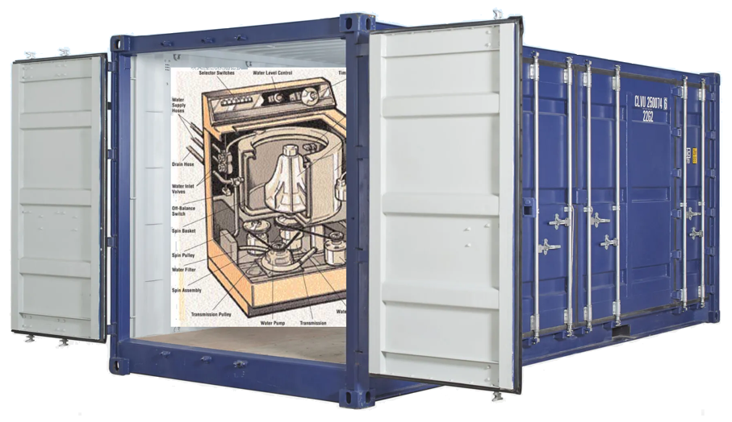

Containerising ATP Systems

Base Containers
- ubuntu-arc = ubuntu:lastest +
cmake, git, tcsh, python3, wget +
/artifacts
- tptp-world = ubuntu-arc +
tptp4X, SPCForProblem +
runsolver/RLR
ATP-system Containers
- ATP-system:version = ubuntu-arc + ATP + run_system
- ATP-system:version-RLR = ATP-system:version + tptp-world
- ENTRYPOINT = runsolver/RLR
- *-RLR pushed to
dockerhub,
with -arm64/-amd64 suffix
Running *-RLR Containers
- Started with podman run
- Parameters for the ATP system passed (to run_system) in environment variables
- RLR_CPU_LIMIT - CPU time limit,
RLR_WC_LIMIT - wall clock time limit,
RLR_MEM_LIMIT - memory limit
- RLR_INTENT - intent (THM or SAT),
RLR_INPUT_FILE - problem file name
- Problem file is passed in using volume mounting
- run_image.py makes life easy